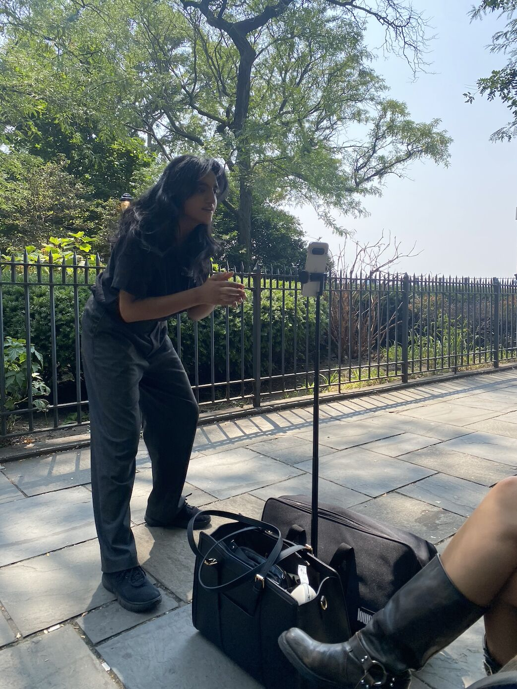
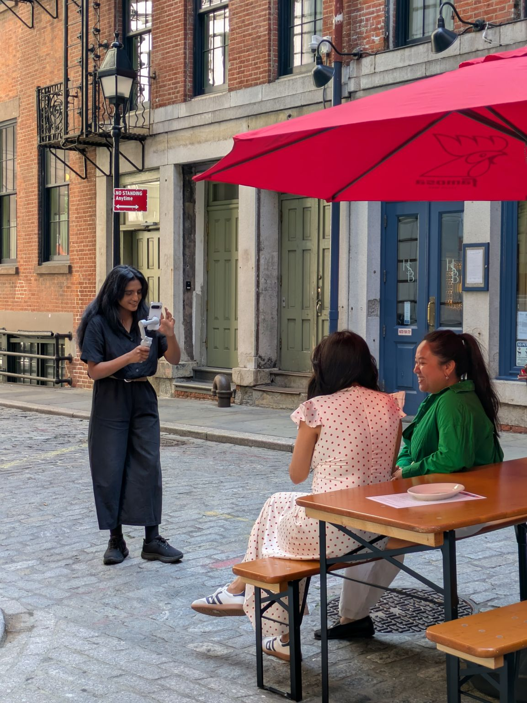

Due to NDA restrictions, final campaign assets cannot be displayed. Visuals reflect on-set production environment. Click here for more.
ANDROID
Role: Content Creator Intern & 1st AC (Laundry Service)
The Objective: Executed the technical on-set vision and managed the full-cycle production logistics for a high-stakes, multi-tiered social campaign for Android.
Pre-Production & Strategy: Drove comprehensive pre-production workflows, including location scouting, drafting granular shot lists, and participating in high-level client strategy meetings to map out the execution of three complex shoots within a single week.
On-Set Execution & Client Relations: Trusted as the primary camera operator and 1st AC based on extensive film experience. Directed composition, framing, and blocking while simultaneously managing cross-functional teams, including Art Directors, copywriters, and direct Android client representatives, to ensure a professional, highly efficient set environment (and occasionally wrangling hundreds of kittens).
Post-Production Handoff: Managed rigorous post-shoot logistics, overseeing hours of data transfers, asset organization, and the creation of highly detailed editing instructions to guarantee a seamless handoff to the post-production team.